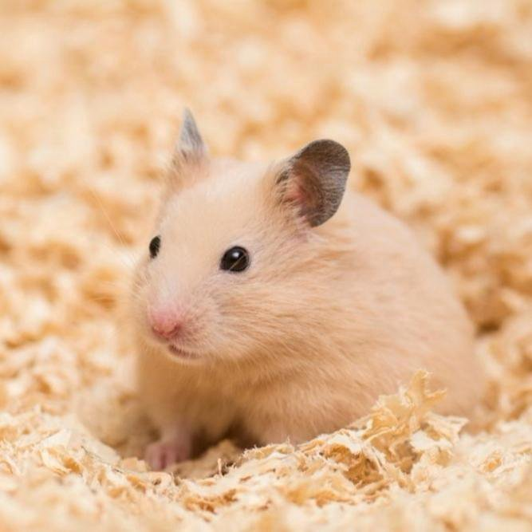

Вернуться назад: Породы кошек.
Хомяк обыкновенный
Это крупный вид хомяков, самцы могут вырастать в длину до 32 см.
Шерстка у зверьков трехцветная: спинка коричневая, брюшко черное, мордочка и лапки белые.
Сирийский хомяк
Сирийские хомяки известны общительным характером, но все же и их лучше содержать отдельно друг от друга.
Живущие в одной клетке питомцы будут постоянно драться и могут поранить друг друга.

Русский карликовый хомяк (хомяк Кэмпбелла)
Это очень пугливый, но в то же время общительный хомячок, поэтому он хорошо уживается в одной клетке с сородичами.
Главное следить, чтобы соседи не обижали его.
Даже взрослые питомцы этой породы отличаются миниатюрным размером, вырастая не более 10 см